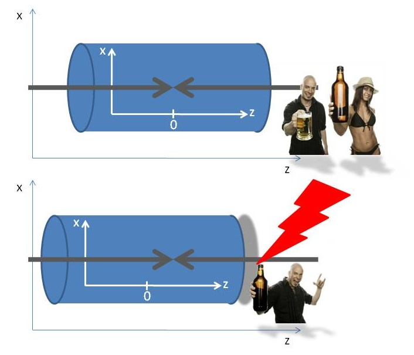

Got stuck? This is the solution
Change TBeamSpotSel.C to draw hBeamSpotZ_Time instead of hBeamSpotXYZ:
void TBeamSpotSel::Terminate()
{
TH1* h = (TH1*) GetOutputList()->FindObject("hBeamSpotZ_Time");
h->Draw();
}
You will see that in the bin for 35-36 seconds something has happened: the Z position of the beam spot is shifted by about 1.5cm. This could mean that the beam has moved, or that the reference frame (the detector) has moved. Knowing that the student stumbled, he probably fell against the detector and moved it.
The beam position has moved towards higher Z, so the detector has moved towards negative Z. The falling student, bumping into the detector, must thus have been standing at the positive Z side of the detector, pretty much like this (where the gray arrows are obviously the beam particles):
